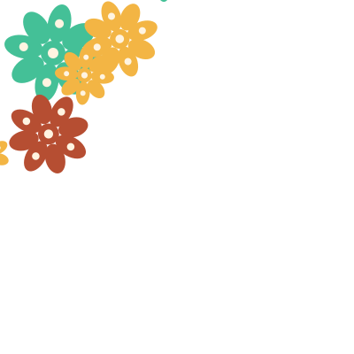
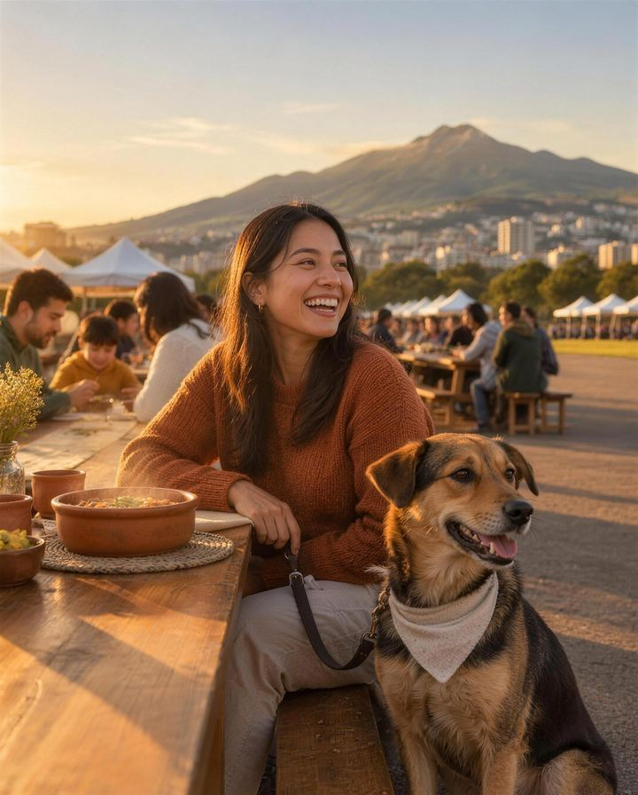
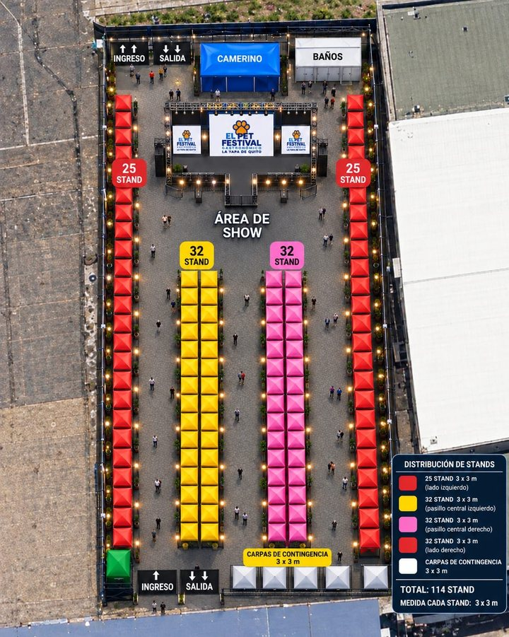

Sábado 12 de diciembre
- 18:00 Inri
- 19:00 Empicc


El Pets Festival Gastronómico · La Yapa de Quito
Sábado 12 y domingo 13 de diciembre 2026
Comida quiteña, música en vivo y un festival canino, al aire libre.
Lista de interés · Anotarte no es pagar
Te avisamos cuando abra la venta. Son USD 5 más USD 1,12 de servicio de la tiquetera, más IVA; el total se muestra antes de confirmar la compra.
Qué vas a vivir
Al aire libre, en la explanada del antiguo aeropuerto, con el Pichincha de fondo.
El escenario
Se suman artistas emergentes de Quito; sus nombres están en definición.
Quiero mi entradaEl mapa

Distribución referencial del organizador; puede ajustarse por seguridad.
Lista de interés
Te escribimos el día que abra la venta de entradas. Anotarte no es pagar ni reservar.
Antes de ir
Preguntas frecuentes
El sábado 12 y el domingo 13 de diciembre de 2026, de 09:00 a 21:00, en el espacio exterior del Centro de Convenciones Metropolitano, dentro del Parque Bicentenario, en el norte de Quito. El ingreso es por la Plaza del Oso.
USD 5 más USD 1,12 de servicio de la tiquetera, más IVA. El total se muestra antes de confirmar la compra.
La venta abre pronto. Si te anotas en la lista, te avisamos el día que abra. Compra solo en los enlaces que publique el festival.
Cada entrada vale para una persona y un solo ingreso. Si vienes los dos días, necesitas una entrada para cada día.
No. Cada entrada permite un solo ingreso: si sales, para volver necesitas una entrada nueva.
Los niños mayores de 2 años pagan entrada. Todos los niños entran con una persona adulta responsable.
Sí, en la boletería del ingreso, si quedan entradas.
Sí, con correa o sujeción segura y bajo tu cuidado todo el tiempo. Recoge sus desechos. No pueden entrar perros con signos de enfermedad contagiosa.
No. Hay adopción responsable durante el día, con la fundación.
No. Es un festival independiente, el fin de semana siguiente a las Fiestas.
De aquí al 12
Lo que se confirme, se cuenta aquí.
Agregar a mi calendario Sábado 12 y domingo 13 de diciembre, de 09:00 a 21:00